금속재료기사 (2014-05-25 기출문제)
1과목: 금속조직학
1. 용질원자와 용매원자가 규칙격자로 되면 어느 성질이 나빠지는가?
- 경도
- 연성
- 강도
- 전기전도도
(정답률: 85%)

2. 다형(Polymerphism)이란?
- 자기변태를 가지는 것
- 비동소변태를 가지는 것
- 자유전자에 의해 전기전도도를 가지는 것
- 원소에 따라 2개 또는 그 이상의 결정구조를 가지는 것
(정답률: 94%)
3. 금속재료의 강도를 증가시키는 방법이 아닌 것은?
- 고용강화
- 석출강화
- 분산강화
- 결정립조대화 강화
(정답률: 86%)
4. 상의계면(interface)에 대한 설명 중 틀린 것은?
- 원자간 결합에너지가 클수록 계면에너지가 크다.
- 계면에너지가 작은 면의 성장속도는 느리다.
- 정합 계면을 가진 석출물은 성장하면서 정합성을 상실할 수 있다.
- 두상의 결정구조, 조성 또는 방위가 다른 경우도 계면에서 두 상 사이에 변형을 일으키지 않는 원자 대응이 이루어지더라도 정합계면을 이룰 수 없다.
(정답률: 90%)
5. 다음 원소 중에서 침입형 고용체를 형성하기에 가장 힘든 원소는?
- C
- O
- N
- Cl
(정답률: 86%)
6. 냉간가공된 순수한 구리를 상온에서 고온으로 서서히 연속적으로 가열할 때 가장 많은 에너지를 방출하는 과정은?
- 회복
- 잠복기
- 재결정
- 결정립 성장
(정답률: 86%)
7. 깁스의 상율에서 순수한 물이 불변점(invariantpoint)에서 갖는 자유도는?
- 0
- 1
- 2
- 3
(정답률: 91%)
8. 마텐자이트(martensite)가 경도가 큰 이유를 설명한 것 중 옳은 것은?
- 결정이 조대화되기 때문이다.
- 풀림에 의한 서냉 때문이다.
- 급냉으로 인한 내부응력 때문이다.
- 탄소원자에 의한 철 격자의 약화 때문이다.
(정답률: 88%)
9. 고강도 저합금강(High Strength Low Alloy Steel)에서 강도에 기여하지 않는 강화기구는?
- 석출경화
- 가공경화
- 고용강화
- 입자 미세화 강화
(정답률: 65%)
10. 0.5% Wt 탄소강이 A1선 직상에서 평형상태를 유지하고 있는 경우 미세조직을 구성하고 있는 상 성분의 양은? (단, α의 탄소함유량은 0.025%, 공석점의 탄소함유량은 0.8%이다.)
- 페라이트 12%, 오스테나이트 88%
- 페라이트 18%, 오스테나이트 82%
- 페라이트 27%, 오스테나이트 73%
- 페라이트 39%, 오스테나이트 61%
(정답률: 87%)
11. 다음의 금속격자에서 전연성이 가장 우수하고, 가공성이 좋은 격자는?
- 면심입방격자
- 조밀입방격자
- 체심입방격자
- 단사입방격자
(정답률: 78%)
12. Decorate나 X-선 회절법에 의하여 관찰할 수 있는 것은?
- 전위
- 편석
- 비중
- 응력
(정답률: 78%)
13. 금속의 일반적 성질을 바르게 나타낸 것은?
- 고유광택을 갖지 않는다.
- 열에 양도체이다.
- 전성 및 연성을 갖지 않는다.
- 액체 상태에서만 결정구조를 갖는다.
(정답률: 88%)
14. 다음 중 전율고용형 상태도를 나타내는 합금은?
- Ag –Cu
- Co –Cu
- Cu –Ni
- Pb -Zn
(정답률: 84%)
15. 금속 합금에서 고용강화가 재료의 특성에 미치는 방향으로 틀린 것은?
- 합금의 전기전도도는 순수한 금속보다 훨씬 작다.
- 대부분 합금의 연성은 순수한 금속보다 더 작다.
- 합금의 크리프에 대한 저항성은 순수한 금속보다 더 작다.
- 합금의 항복강도, 인장강도는 순수한 금속보다 더 크다.
(정답률: 78%)
16. 고용체에서 규칙도(Degree of order)가 1인 것을 무엇이라 하는가?
- 완전불규칙 고용체
- 반불규칙 고용체
- 완전규칙 고용체
- 반규칙 고용체
(정답률: 91%)
17. 열평형 상태하에서 존재 가능한 결함으로서 쇼트키(Shottky) 결함이라고도 하는 것은?
- 공공(vacancy)
- 전위(dislocation)
- 적층결함(stackingfault)
- 격자간 원자(interstitialatom)
(정답률: 84%)
18. 다음 그림은 A-B-C 3원 합금계이다. 그림에서 P 합금 중의 A의 농도를 Roozeboom법에 의해 옳게 나타낸 것은?
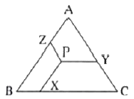
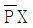
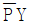
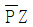
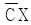
(정답률: 88%)
19. 순철의 동소변태에 대한 설명으로 틀린 것은?
- 비중의 변화가 일어난다.
- 자기적 특성의 변화가 일어난다.
- 결정구조의 변화가 일어난다.
- 성질변화는 일정한 온도에서 급격히 비연속적으로 일어난다.
(정답률: 76%)
20. 포정반응이 공정반응보다 응고속도가 대단히 느린 가장 큰 이유는?
- 과냉속도가 낮기 때문이다.
- 용해온도가 같기 때문이다.
- 석출을 필요로 하기 때문이다.
- 고체 내 확산을 필요로 하기 때문이다.
(정답률: 88%)
2과목: 금속재료학
21. Cr, W, Mo, V 등의 합금원소에 의하여 변하는 특수강의 상태도 중 틀린 것은?
- A3점이 상승한다.
- A4점이 강하된다.
- Austenite 구역을 좁힌다.
- Austenite 구역을 확대시킨다.
(정답률: 71%)
22. 금속에서 일어나는 회복현상을 설명한 것 중 틀린 것은?
- 전위 재배열 및 소멸과 관계가 있다.
- 회복에 의해 전기저항은 서서히 감소된다.
- 결정 내부의 변형에너지가 감소되는 현상이다.
- 결정 내부의 항복강도가 증가하는 현상이다.
(정답률: 58%)
23. 강인성과 내마모성이 우수한 것으로 해드필드강(hadfield steel) 이라고 하는 것은?
- 황 쾌삭강
- 고 망간강
- 시멘타이트강
- 페라이트 내열강
(정답률: 91%)
24. 오스테나이트계 스테인리스강에 대한 설명으로 틀린 것은?
- 고용화 열처리를한다.
- 18(Cr)-8(Ni) 스테인리스강이다.
- 실온에서 강자성이고 내식성이 나쁘다.
- 결정은 FCC이며, 오스테나이트 조직이다.
(정답률: 88%)
25. Ni-Cr계 합금으로 유기물 및 염류용액의 부식에 견디며 열전대, 보호관 및 진공관의 필라멘트에 사용되는 것은?
- 양백
- 켈멧
- 라우탈
- 인코넬
(정답률: 64%)
26. 분말의 겉보기 밀도가 높은 순서대로 나열한 것은?
- 구상＞불규칙상＞판상
- 불규칙상＞구상＞판상
- 판상＞불규칙상＞구상
- 불규칙상＞판상＞구상
(정답률: 84%)
27. 실루민(Silumin)이란 어느 계통의 합금인가?
- Al-Si계 합금
- Fe-Si계 합금
- Cu-Si계 합금
- Ti-Si계 합금
(정답률: 88%)
28. 강에 함유된 황을 제거하여 황(S)의 해를 제거하는 것으로 가장 적절한 원소는?
- C
- P
- Mn
- Si
(정답률: 78%)
29. 탄소강과 합금강을 300°C 부근에서 뜨임하면 최저 충격에너지가 나타난다. 이러한 현상을 무엇이라 하는가?
- 청열취성
- 적열취성
- 시효경화
- 가공취성
(정답률: 80%)
30. 마그네슘에 대한 설명 중 틀린 것은?
- 고온에서 발화되기 쉽다.
- 감쇠능(減衰能)이 주철보다 작다.
- 비중이약1.74, 용융점이 약 650°C 이다.
- 비강도가 커서 항공우주용 재료로써 매우 유리하다.
(정답률: 77%)
31. 시효(aging)현상과 관련이 없는 것은?
- 석출
- 비열
- 과포화
- 고용한도
(정답률: 86%)
32. 황동에서 발생하는 자연균열 현상에 대한 설명으로 옳은 것은?
- 아연이 용해되어 발생한다.
- 외부의 인장하중에 의해서도 발생한다.
- α+β 황동에서는 C를 첨가하면 억제할 수 있다.
- 암모니아 분위기 또는 그 유도체가 있는 경우에는 전혀 발생하지 않는다.
(정답률: 70%)
33. Fe-C 평형상태도에서 가장 높은 온도에서 일어나는 불변반응은?
- 공정반응
- 공석반응
- 포석반응
- 포정반응
(정답률: 75%)
34. 정적인 하중으로 파괴를 일으키는 응력보다 훨씬 낮은 응력으로도 반복하여 하중을 가하면 결국 재료가 파괴되는 현상을 무엇이라고 하는가?
- 피로현상
- 에릭센현상
- 항복응력현상
- 크리프한도현상
(정답률: 87%)
35. 담금질한 상태의 강은 경도가 매우 높으나 취약해서 실용할 수 없어 변태점 이하의 적당한 온도로 재가열하여 사용해 인성과 같은 기계적 성질을 향상시키는 열처리법은?
- 어닐링(annealing)
- 담금질(quenching)
- 뜨임(tempering)
- 노멀라이징(normalizing)
(정답률: 86%)
36. 78.5% Ni-Fe 합금으로 우수한 고투자율성을 나타내는 합금은?
- 인바(Inbar)
- 엘린바(Elinvar)
- 퍼멀로이(Permalloy)
- 니칼로이(Nicalloy)
(정답률: 78%)
37. 합금주철에서 합금 원소의 영향을 설명한 것 중 옳은 것은?
- Al은 흑연화를 저해하는 원소이다.
- Ni은 흑연화를 저해하는 원소이다.
- Mo은 탄화물 생성을 저해하며 흑연화를 촉진한다.
- Cr은 Fe3C를 안정화시키는 강력한 원소이며 Fe와 각종 탄화물을 만든다.
(정답률: 73%)
38. 섬유강화복합재료에서 섬유축 방향으로 인장력을 가하여 파단하는 경우에 복합재료의 강도와 관계없는 인자는? (단, 섬유와 모재의 계면에서 파단이 일어나지 않는다고 가정한다.)
- 쌍정
- 섬유의 강도
- 섬유의 용적률
- 모재금속의 파단변형에서의 응력
(정답률: 84%)
39. 수소저장 합금에서 열에너지의 저장 및 수송 등에 사용 가능한 합금계가 아닌 것은?
- Cu -Zn계
- Fe –Ti계
- LaNi5계
- Mg2Ni계
(정답률: 67%)
40. 다음 철강재료의 경도(Hardness) 시험법에 대한 설명 중 틀린 것은?
- 로크웰(Rockwell)시험법은 강철 압입자 또는 다이아몬드 압입자를 사용하는 경도시험법이다.
- 브리넬(Brinell) 경도시험은 반발을 이용하는 경도시험법이다.
- 누프(Knoop) 경도시험법은 꼭지점에서 양반대면 사이의 규정된 각도를 가진 피라미드형 다이아몬드 압입자를 사용하는 경도시험법이다.
- 비커스(Vickers) 경도시험은 작용하중과 누름자의 크기 때문에 미세경도시험(Microhardness) 이라고도 한다.
(정답률: 78%)
3과목: 야금공학
41. 내부에너지 40kJ, 절대압력이 200kPa, 체적이 0.1m3, 절대온도가 300K인 계의 엔탈피는 약 몇 kJ 인가?
- 42
- 50
- 60
- 240
(정답률: 67%)
42. [보기]와 같은 조건에서 금속 M의 정상 녹는 온도는?
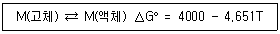
- 587K
- 860K
- 1133K
- 1180K
(정답률: 79%)
43. 내화물에 대한 설명으로 틀린 것은?
- SiO2는 산성 성분이다.
- 마그네시아는 염기성 성분이다.
- 내화재는 열전도도가 커야 한다.
- 내화재는 SK 26번 이상의 내화도를 가진 것으로 규정한다.
(정답률: 82%)
44. 탄소 36kgf이 완전 연소할 때 생성되는 CO2 가스의 체적(Nm3)은?
- 32.3
- 54.7
- 67.2
- 95.4
(정답률: 64%)
45. C-O계 반응에서 부두아 곡선에 대한 설명으로 틀린 것은?
- CO2+C→2CO은 carbon solution 반응이다.
- carbon solution 반응은 고온에서 일어나므로 반응속도가 비교적 빠르다.
- 압력이 1atm보다 커지면 2CO→CO2+C 반응이 촉진되어 왼쪽으로 이동한다.
- 고압 조업을 하면 carbon deposition 반응이 활성화 되어 걸림의 원인이 될 수 있다.
(정답률: 81%)
46. 밀폐된 계에서 비가역 반응이 일어날 때 엔트로피변화 ΔS는 어떤 경우에 해당하는가?
- ΔS = 0
- ΔS ＞ 0
- ΔS ＜ 0
- ΔS = ∞
(정답률: 62%)
47. 어떤 반응의 1000K에서 표준 자유에너지변화(ΔG°)가 50000J/mole로 측정 되었고, 이 때의 실험오차가 ±5% 였다고 한다면, 이로 인해 1000K에서의 평형상수에 나타나는 오차는 약 몇 % 인가?
- 5
- 10
- 20
- 30
(정답률: 52%)
48. 탄소(C(s))가 산화하여 이산화탄소(CO2(g))가 되는 반응C(s)+O2(g)=CO2(g)의 표준 깁스자유에너지변화(ΔG°)는 [보기]와 같이 절대온도 T의 함수로 나타낼 수 있다. 
[보기]의 반응은 어떠한 반응이며, 각 성분이 순수한 경우 1000K에서 어느 방향으로 반응이 진행되는가?
- 반응 : 발열반응, 방향 : 정방향
- 반응 : 흡열반응, 방향 : 정방향
- 반응 : 발열반응, 방향 : 역방향
- 반응 : 흡열반응, 방향 : 역방향
(정답률: 76%)
49. 미세한 분광을 드럼 또는 디스크에서 입상화한 후 소성 경화해서, 달걀의 노른자 크기의 광을 얻는 괴상법으로 단광과 소결을 합한 방법은?
- Briqutting
- Pelletizing
- Sintering
- Oreblending
(정답률: 75%)
50. 이상기체의 성질이 아닌 것은?
- PV = nRT
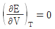
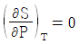
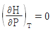
(정답률: 64%)
51. 얼음 위에서 스케이팅할 수 있는 것과 관계 없는 것은?
- ΔHs ＞ 0
- ΔVs ＜ 0
- 리차아드의법칙
- 클라우시구스-클레페이론식
(정답률: 67%)
52. 활동도에 관한 헨리(Henry)의 법칙 ai=kiNi를 만족하는 용액에서 활동도 계수 ki는?
- 일정하다.
- 언제나 1보다 크다.
- 언제나 1보다 작다.
- i 성분의 몰분율 Ni의 값에 따라 변한다.
(정답률: 77%)
53.
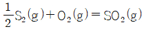
반응에서 ΔG°=-361700+76.68T(Q) 반응식의 각 기체가 이상기체라고 가정하면 1000K에서 표준 내부에너지변화(ΔU°) 값은 약 몇 J 인가?- -357543J
- -365857J
- 357543J
- 365857J
(정답률: 51%)
54. 내화재가 가져야 하는 여러 가지 특성 중 전로용 내화물이 급격한 온도 변화에 견디기 위해서는 어떠한 특성이 요구되는가?
- 내식성
- 내충격성
- 내마멸성
- 내스폴링성
(정답률: 77%)
55. 다음 중 열량에 대한 설명으로 옳은 것은?
- 기체연료의 연소열은 1m3을 완전 연소시켰을 때 발생하는 열량을 말한다.
- 고체연료, 액체연료의 연소열은 1kgf을 불완전 연소시켰을 때 발생하는 열량을 말한다.
- 물이 수증기 상태로 되어 있는 발열량을 총발열량 또는 고위발열량이라 한다.
- 수증기가 응축해서 물로 되었을 때의 발열량을 진발열량 또는 저위발열량이라 한다.
(정답률: 81%)
56. 이상용액에 대한 설명 중 틀린 것은?
- 이상용액의 각 성분의 혼합열은 0 이다.
- 이성분계 이상용액의 생성엔트로피는 용액의 온도에 따라 변한다.
- 라울(Raoult)의 법칙이 모든 농도와 온도에서 적용되는 용액이다.
- 이상용액의 부피는 혼합하기 전의 순수한 성분들이 갖는 부피의 합과 같다.
(정답률: 47%)
57. 다음 중 열전도율의 단위로 옳은 것은?
- kcal/h
- kcal/h·°C
- kcal/m3·h·°C
- kcal/m·h·°C
(정답률: 80%)
58. 에너지의 모든 형태가 가지는 인자( 因子) 중에서 내용이 틀린 것은?
- 열에너지의 두 인자는 온도와 압력이다.
- 에너지의 양(量)은 2개의 인자의 적(積)으로 얻어진다.
- 전기에너지는 전위차와 진하량을 곱한 것으로 나타낸다.
- 에너지량은 시강인자(intensity factor)와 시량인자(capacity factor)의 곱으로 표현가능하다.
(정답률: 61%)
59. 엔트로피(entropy)의 값으로 알 수 없는 사항은?
- 불규칙 정도(degree of randomness)
- 화학적 반응이 일어난 경로(path)
- 비가역정도(irreversibility)
- 화학적 반응의 자발적 방향(direction Of process)
(정답률: 71%)
60. 보조함수, 맥스웰(Maxwell)관계식, 변화공식 등의 가장 큰 장점으로 옳은 것은?
- 열역학적 상태식을 실험적으로 응용할 수 있다.
- 열역학적 상태변화를 속도론적으로 고찰한 것이다.
- 열역학적 평형상태는 이들 없이는 나타낼 수 없다.
- 열역학적 상태함수는 물론 상태변화 경로의 함수까지를 포괄적으로 나타낼 수 있다.
(정답률: 69%)
4과목: 금속가공학
61. 분산강화 및 석출강화에 대한 설명 중 틀린 것은?
- 금속기지 속에 미세하게 분산된 불용성 제2상으로 인하여 생기는 강화를 분산강화라 한다.
- 석출강화에서는 석출물이 모상과 비정합 계면을 만들 때 가장 효과가 크다.
- 석출입자에 의한 강화에서 석출물의 강도와 그 분포가 강도에 가장 큰 영향을 미친다.
- Orowan 기구는 과시효된 석출 경화형 합금의 강화기구를 가장 잘 설명하고 있다.
(정답률: 69%)
62. 금속의 변형기구에 대한 설명 중 틀린 것은?
- 일반적으로면심입방체의슬립계의수는48개이다.
- 슬립에 의한 변형에서 슬립면은 치밀하게 원자가 배열된 결정면이 주로 된다.
- 고온에서 변형 할 경우 저온에서 나타나지 않는 슬립면이 나타날 수 있다.
- 쌍정에 의한 변형은 변형 후 경면관계를 이루는 조건 때문에 큰 소성 변형이 불가능하다.
(정답률: 72%)
63. 나사나 기어 모양의 다이로 소재를 눌러 소재 표면에 다이 모양을 그대로 각인시키는 가공법은?
- 압연가공법
- 압출가공법
- 인발가공법
- 전조가공법
(정답률: 80%)
64. 어떤 재료의 전단탄성계수(G)를 프와송의 비(ν) 및 영율(E)로 나타내면?
- G = 3E(1-ν)
- G = 3E(1+ν)
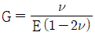
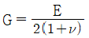
(정답률: 86%)
65. 단조 가공법에서 재료의 중심부까지 변형을 일으키는 단조방법은?
- 자유 단조
- 프레스 단조
- 헤머 단조
- 낙하 단조
(정답률: 77%)
66. 항복인장강도가 86.6kgf/mm2인 철강재료가 다음과 같은 응력상태에 있을 때 변형에너지 이론에 의한 주응력 σ1의 값은 약 얼마(kgf/mm2)인가? (단, σ2=σ1/2, σ3=0 이다.)
- 43.3
- 50
- 86.6
- 100
(정답률: 48%)
67. Hall-Petch 식으로 설명되는 재료의 강화기구는?
- 분산강화
- 고용강화
- 결정립계에 의한 강화
- 점결함에 의한 경화
(정답률: 72%)
68. 두 개의 나선전위가 수직으로 교차할 때 각 전위에는 어떤 단이 발생하는가?
- 한쪽은 킹크가 형성되고, 다른 한쪽은 나선전위의 조그가 발생한다.
- 한쪽은 킹크가 형성되고, 다른 한쪽은 칼날전위의 조그가 발생한다.
- 양쪽 모두에 칼날전위의 조그가 발생한다.
- 양쪽 모두에 나선전위의 조그가 발생한다.
(정답률: 71%)
69. 피로 강도를 최대로 하기 위해서는 시편 표면의 긁힌 자국이 주 인장응력의 방향과 어떤 각을 이룰 때인가?
- 0°
- 45°
- 90°
- 강도와 상관없다.
(정답률: 52%)
70. 연강의 인장 시험시 네킹(necking)현상은 어떤 하중에서 발생하기 시작하는가?
- 항복하중
- 상용하중
- 최대하중
- 파단하중
(정답률: 67%)
71. 바우싱거 효과(Bauschinger effect)를 설명한 것 중 틀린 것은?
- 비틀림 변형의 경우에서 명백히 관찰된다.
- 소성변형에 대한 저항이 이력(hysteresis)과 관계가 있다.
- 응력의 변화가 작은 경우 바우싱거 효과는 무시될 수 있다.
- 한번 어느 방향으로 소성변형을 가한 재료에 역방향의 하중을 가하면 전보다 큰 응력에서 항복이 생긴다.
(정답률: 76%)
72. 어떤 재료의 단일축 항복응력이 35kgf/mm2이다. 이 재료를 순수전단 변형시킬 경우 Von Mises 항복조건이 성립된다고 가정하면 순수전단 항복강도는 얼마(kgf/mm2)인가?
- 17.5
- 20.2
- 24.7
- 28.0
(정답률: 43%)
73. 냉간가공 시 재료에 나타나는 특징을 설명한 것 중 틀린 것은?
- 전위밀도가 증가하여 강도가 커지며, FCC는 BCC보다 경화가 크다.
- 냉간가공으로 생긴 압축잔류응력은 피로 강도의 형상에 효과적이다.
- 결정이 회전하여 결정면이나 방향이 고르게 되므로 이방성의 집합조직이 나타난다.
- 항복점연신을 나타내는 강에 항복점 이상의 냉간가공을 하면 항복점과 항복점 연신이 증가한다.
(정답률: 59%)
74. 압연 작업에서 압하율을 크게 하는 방법이 아닌 것은?
- 지름이 큰 롤을 사용한다.
- 롤의 회전속도를 빨리한다.
- 압연재의 온도를 높여준다.
- 롤 측에 평행인 홈을 롤 표면에 만든다.
(정답률: 83%)
75. 다음 중 샤르피(Charpy) 충격시험기에서 충격에너지(E)를 구하는 식으로 옳은 것은? (단, W는 해머의 무게, R은 해머의 회전축 중심에서 무게중심까지의 거리, α는 해머의 들어 올린 각도, β는 시험편 파단 후 해머가 올라간 각도이다.)
- E = WR(cosβ - cosα)
- E = WR(cosα + cosβ)
- E = 2MR(cosβ - cosα)
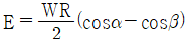
(정답률: 86%)
76. 다음 그래프 중 완전탄성 응력-변형률 곡선으로 가장 옳은 것은?
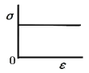
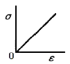
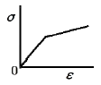
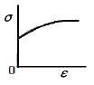
(정답률: 79%)
77. 금속의 강화 중에서 저온에서는 유효하지만 고온에서는 전혀 효과가 없는 강화 방법은?
- 석출강화
- 고용체강화
- 이물질 분산강화
- 결정립 미세화 강화
(정답률: 56%)
78. Nabarro Herring 크리프는 다음 중 어떤 크리프와 관련있는가?
- 확산 크리프
- 전위 크리프
- 결정립계 미끄럼크리프
- 멱수-법칙(powerlaw)크리프
(정답률: 70%)
79. 주석울음(tin-cry) 현상은 어느 변형에 속하는가?
- 슬립변형
- 쌍정변형
- 탄성변형
- 마텐자이트변형
(정답률: 82%)
80. 전위에 대한 다음 설명 중 틀린 것은?
- 이중교차슬립(double cross slip)은 전위원이 될 수 있다.
- 교차 슬립이 용이한 경우에는 슬립선(slip line)이 파상(波狀)이 된다.
- 칼날(edge)전위는 교차슬립을 할 수 있다.
- 나사(screw)전위는 교차슬립을 할 수 있다.
(정답률: 69%)
5과목: 표면공학
81. 무전해 니켈액의 구성 성분에 대한 설명으로 틀린 것은?
- 니켈염 : 니켈 피막을 부여한다.
- 환원제 : 니켈 이온의 모성분의 공급원이다.
- 착화제 : 니켈염의 침전을 방지하고 액을 안정화 시킨다.
- 안정제 : 자기분해를 촉진시킨다.
(정답률: 83%)
82. 각종 금형 및 공구 열처리 등에 이용되는 염욕 및 염욕열처리에 관한 설명으로 옳은 것은?
- 염욕의 점성이 작고, 휘발성이 적어야 한다.
- 염욕의 전도도가 작고, 가열속도는 느리다.
- 균일한 온도 분포를 유지하기 어렵다.
- 항온열처리는 할 수 없다.
(정답률: 80%)
83. 일반적으로 냉각제의 냉각속도를 지배하는 성질의 설명으로 틀린 것은?
- 열전도도가 커야한다.
- 끓는온도가 높아야 한다.
- 비열 및 기화열이 낮아야 한다.
- 점도나 휘발성이 작아야 한다.
(정답률: 64%)
84. 전해콘덴서용 피막을 제조할 때 사용하는 양극산화법은?
- 수산법
- 황산법
- 붕산법
- 크롬산법
(정답률: 56%)
85. 잔류 오스테나이트 생성에 관한 설명 중 옳은 것은?
- 냉각에서 유냉한 것이 수냉한 것보다 잔류 오스테나이트가 많이 생성된다.
- 탄소량이 적은 것이 많은 것보다 잔류 오스테나이트가 많이 생성된다.
- 담금질 온도가 낮은 것이 높은 것보다 잔류 오스테나이트가 많이 생성된다.
- Ms~Mf 구간에서 급냉한 것이 서냉한 것보다 잔류 오스테나이트가 많이 생성된다.
(정답률: 60%)
86. 진공의 단위가 아닌 것은?
- Hz
- Pa
- torr
- mmHg
(정답률: 81%)
87. 각종 코팅법에서 열에너지와 화학반응로 금속 및 합금 코팅이 가능하고 입자가 원자 또는 이온 상태로 코팅이 이루어지는 코팅 방법이 아닌 것은?
- 진공증착
- 이온 플레이팅
- 화학증착(CVD)
- 금속전기도금
(정답률: 62%)
88. 투과전자현미경의 렌즈 수차 중에서 전자계 렌즈의 비대칭성 때문에 렌즈를 통과한 전자가 한 점에 모아지지 않아 생기는 수차를 무엇이라 하는가?
- 색수차
- 회절수차
- 구면수차
- 비점수차
(정답률: 69%)
89. Photoetching에 대한 설명으로 틀린 것은?
- 적외선을 이용한다.
- ion beam을 이용한다.
- metal mask를 이용한다.
- electron beam을 이용한다.
(정답률: 69%)
90. 진공 가열 중 강 표면에 일어나는 기대 가능 효과가 아닌 것은?
- 가스 및 원소를 표면에 침입시킨다.
- 헨리의 법칙에 의해 표면에 가스 작용을 한다.
- 표면에 부착된 절삭유나 방청유 등의 탈지작용을 한다.
- 산화를 방지하여 열처리 전과 같은 깨끗한 표면상태를 유지한다.
(정답률: 59%)
91. 강재의 담금질 시 발생하는 균열 및 변형에 관한 설명 중 틀린 것은?
- 담금질 냉각시에 나타난다.
- 마텐자이트 변태와 함께 일어난다.
- 예리한 모서리나 구멍(hole)부위에서 일어난다.
- 냉각제의 냉각능이 작을수록 변형 발생 가능성이 크다.
(정답률: 53%)
92. 아노다이징 과정에서 Sealing 처리와 관계 없는 것은?
- 수증기
- 고진공
- 봉공처리
- 알루미늄착색
(정답률: 58%)
93. 다음 CVD 피막의 물리적인 성질에 있어서 가장 경도가 높은 피막은?
- TiC
- TiN
- TiCN
- Al2O3
(정답률: 85%)
94. 진공 중에 금속을 가열하면 금속이 증발한다. 이렇게 증발하는 금속 분자를 증기 온도보다 낮은 온도의 기판에 부착시키면 표면에서 증기가 응축하여 박막을 형성하는 코팅법을무엇이라 하는가?
- 도장법
- 음극전해법
- 진공증착법
- 화학침투법
(정답률: 81%)
95. 시안화구리 도금액 중 고농도액의 조성에 해당되지 않는 것은?
- 수산화칼륨
- 시안화구리
- 산화카드뮴
- 시안화나트륨
(정답률: 72%)
96. 금속표면처리에서 전처리 작업은 품질을 결정하는 중요한 공정이다. 전처리의 불완전에서 발생하는 도금결함을 나타낸 것이 아닌 것은?
- 도금제품의 부식과 취성이 발생된다.
- 도금두께의 편차가 크게 발생된다.
- 도금 층이 거칠게 나타나고, 피트가 발생한다.
- 도금 층에 얼룩, 구름낌 등의 광택 불균형이 생긴다.
(정답률: 58%)
97. PVD법의 특징에 대한 설명으로 틀린 것은?
- 새로운 미세구조와 비결정질 코팅(coating)층을 만들 수 없다.
- 고순도의 코팅(coating)층을 얻을 수 있다.
- 높은 도금률의 피복제를 만들 수 있다.
- 증착층의 표면이 미려하다.
(정답률: 69%)
98. 화학적 기상도금(CVD)법의 특징으로 틀린 것은?
- 처리온도가 1000°C 정도로 높다.
- 파이프의 내면 미립자에는 피복이 불가능하다.
- 두꺼운 피복도 가능하며, 여러 성분의 피복도 가능하다.
- 형성된 피막의 모재와 확산 또는 반응을 일으켜 밀착성이 매우 좋다.
(정답률: 83%)
99. 다음 중 전자빔이 시편에 조사될 때 상호작용으로 시편이 방출시키는 신호들 중 1차 전자가 에너지의 변화없이 방향을 바꾸어 방출되는 것으로 주사전자현미경에서 시편의 조성에 따른 명암차를 나타내는 역할을 수행하는 것은?
- 후방산란전자
- 2차전자
- Auger전자
- 특성X선
(정답률: 73%)
100. 재료의 결함에서 미시편석에 대한 설명 중 틀린 것은?
- 미시 편석에 관계되는 원소들로는 Cr, Ni, Mo 등이 있다.
- 아공석 구조용강의 열간 압연시 발생하는 페라이트-펄라이트 밴드조직의 원인은 Si의 편석이다.
- Cr-Ni-Mo 강의 주상정 및 등축정에서는 Cr의 편석이 나타난다.
- 강괴의 균열, 취성파단, 열간가공시의 적열취성은 강괴의 미시편석과 관계가 있다.
(정답률: 65%)